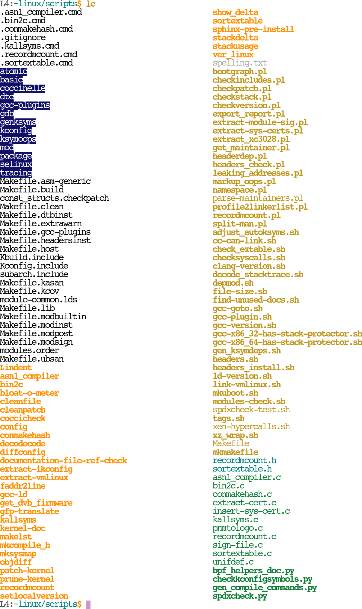
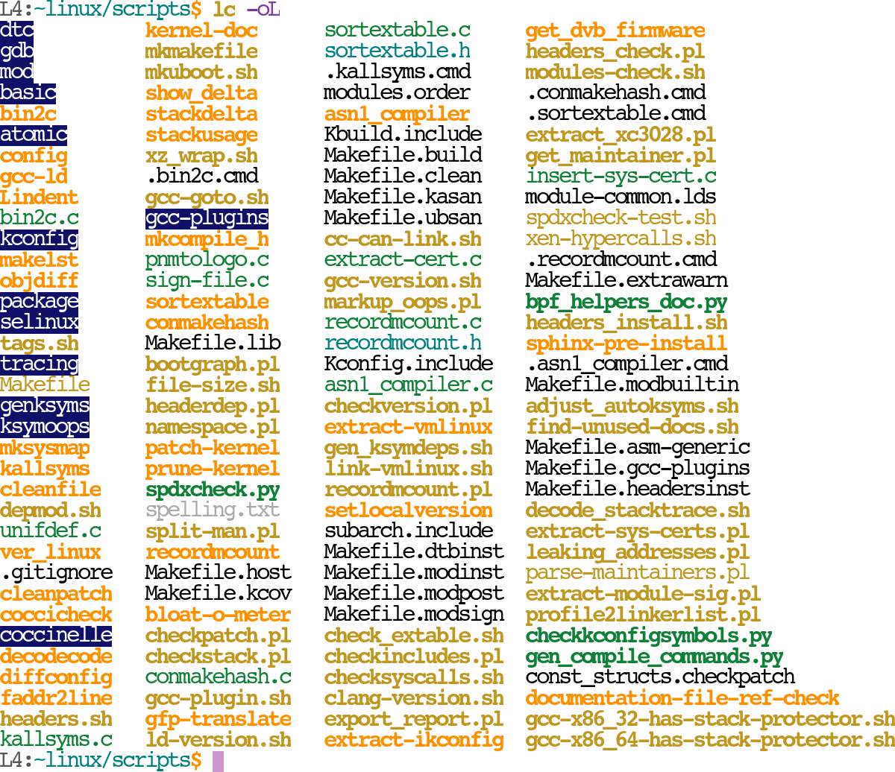
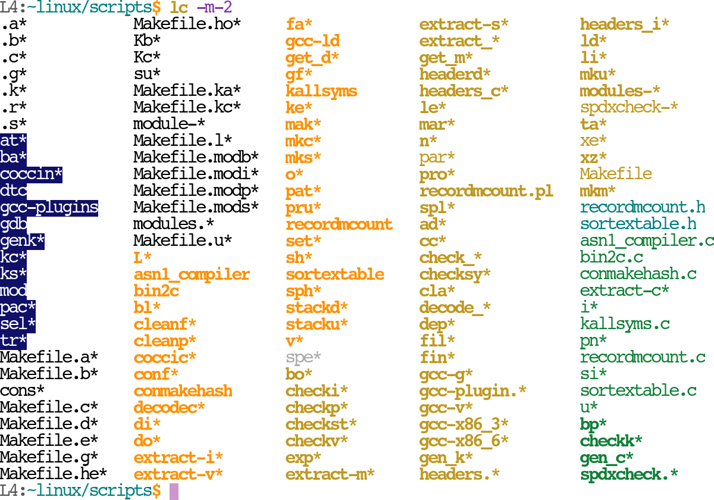
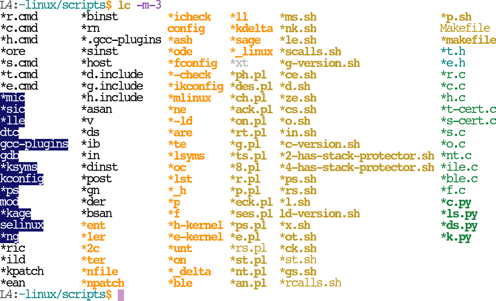
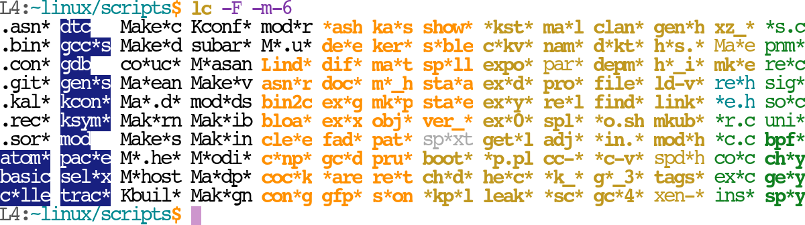

We start at 70 rows and end at 8. (8.75X reduction) with gradual loss of readability (obviously subjective vs. the objective space measurement or unique pattern expansion).
Base full name directory (70 rows of 2 cols):
Sort by name length (35 rows of 4 cols) -- this is very fast and typically very readable (for me) since it provides max prefix & suffix context:
 Shortest such that mid-point * produes a unique pattern (35 rows
of 4 cols):

Best same-column-for-* (28 rows of 5 cols) -- this is also
very fast and typically still readable, but more compact:
Shortest unique prefix patterns (28 rows of 5 cols):
Shortest unique suffix patterns (24 rows of 6 cols):
Shorter of shortest unique prefix|suffix (18 rows of 8 cols):

Shortest unique single-* patterns (12 rows of 12 cols):
Shortest unique two-* patterns (10 rows of 14 cols):
Shortest unique two-* patterns, sorted by length (8 rows of
18 cols):
Note that the shortest 3-star patterns distinct from 2-star patterns must
be at least 5 chars (*a*b*). The above listing tops out at 5 chars. So, no
further compression is possible. lc does not actually do 3-star
patterns, yet, but even if it did this example would stop here.
-F to re-Fit/expand the compressed patterns
into the available tabular column space "post layout". So, for example for
the penultimate case above we get:

Skipped for brevity, but with -m-4 compression -F
winds up fully expanding 20% of dirents at no layout cost.
On directories with thousands of entries or more that -m-[456]
can take from 10 seconds to minutes. I am unsure much faster algos
exist. Sadly, large dirs are also when this kind of visual compression might
help most. However, -Fma may be the most that remains easily
interpretable anyway and that is always fast.